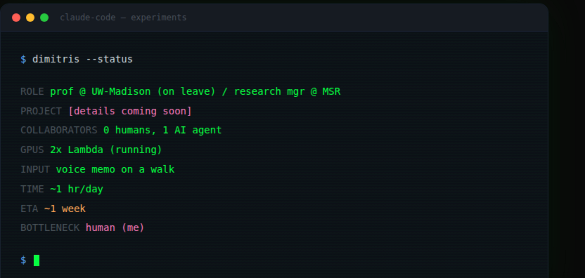
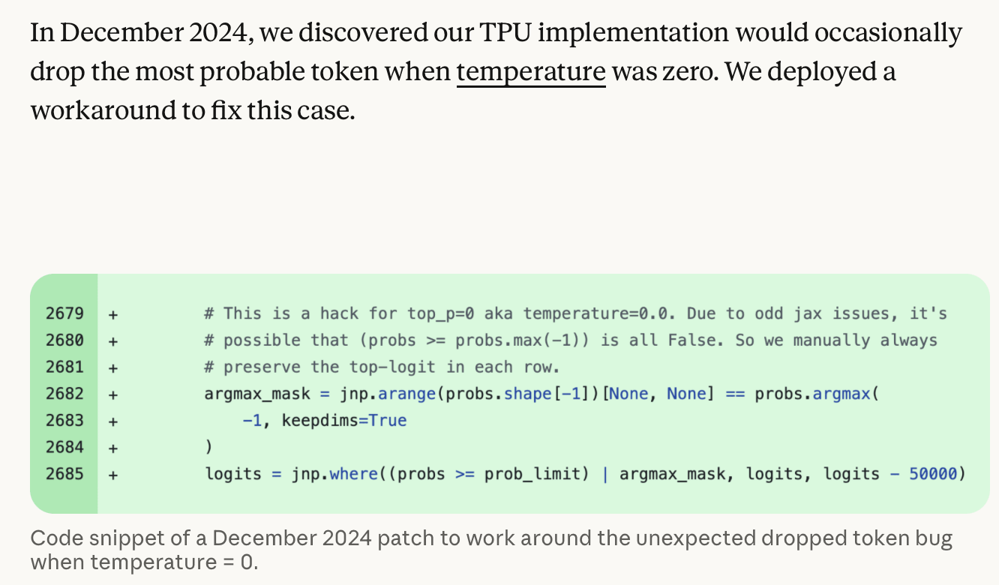
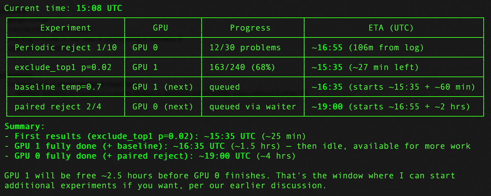
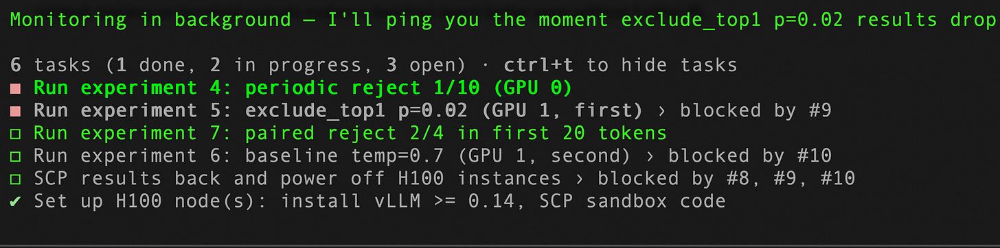

A few days ago I wrote about waking up grumpy11. D. Papailiopoulos. A grumpy morning in the age of agents. Substack, Feb 6, 2026. after watching Claude Code and Codex spend a full day (and night) iterating on a silly GSM8K idea about solving math problems with purely symbolic methods.
That post was mostly about the dread I felt with the revelation of the automation afforded by the new gen of coding agents. This post is about leaning into it.
I’m attempting to run a simple experiment on myself.
I started from a simple and well-scoped idea, the type of problem I’d normally give to a junior student to get their feet wet, and I am trying to go from concept to semi concrete results using Claude Code for all experiments, infra setup, and first report.
The idea I’m specifically interested in came from a known Anthropic infrastructure bug22. Anthropic. A postmortem of three recent issues. Sep 17, 2025. where the most probable token was occasionally dropped during generation, and it seemed to affect model behavior in interesting ways. A question crept into my mind that is loosely inspired by this, but the details don’t matter for now. I’ll share more once the results are in.

So, I went on a long walk, recorded a 5-10 minute voice message explaining the problem, I used ChatGPT’s voice-to-text to transcribe it (which is, by the way, superior to anything else out there), and pasted the transcript into Claude Opus 4.6. I told Claude that I want to run this end-to-end with Claude Code, and no other humans involved, and it produced a prompt. I pasted that prompt into Claude Code, and from there the AI agent basically took over.
Claude Code is, as I am writing this, handling ssh into lambda GPU instances, pushes code to github, pulls results locally, babysits and monitors jobs across multiple GPUs, queuing jobs I request, estimating ETAs, etc.

The agent keeps me posted, and I can bug it anytime for intermediate results. It is kind of incredible.

To be clear, I care about this idea, but it is a side thing that I don’t have time to commit hours on it. It would likely take me, optimistically, weeks. A student could probably do it in a few days but they’re all busy with their own projects. My MSR colleagues are working on much more important things. But I still want to know the answer to it!!
So now it’s basically me and Claude on this one. Which either feels exciting or dystopian depending on the time of day, and how much coffee I’ve had. But mostly exciting.
So far, it’s been a couple hours of my own work a day, checking in, redirecting, and I think I can get from idea to human-readable output (I don’t quite want to call it paper) in a few days. The only bottlenecks are me finding the time to check in with Claude and the GPUs finishing their runs. Definitely not the engineering.
What does this mean for research in general, but also what does it mean for the way I approach it?
This will obviously increase throughput of arxiv-slop, and that part is a little scary and bad.
But the intellectually interesting part for me is something else. I now have something close to a magic box where I throw in a question and a first answer comes back basically for free, in terms of human effort. Before this, the way I'd explore a new idea is to either clumsily put something together myself or ask a student to run something short for signal, and if it's there, we’d go deeper. That quick signal step, i.e., finding out if a question has any meat to it, is what I can now do without taking up anyone else's time. It’s now between just me, Claude Code, and a few days of GPU time.
I don’t know what this means for how we do research long term. I don’t think anyone does yet. But the distance between a question and a first answer just got very small.
See you in a few days with what actually happened.